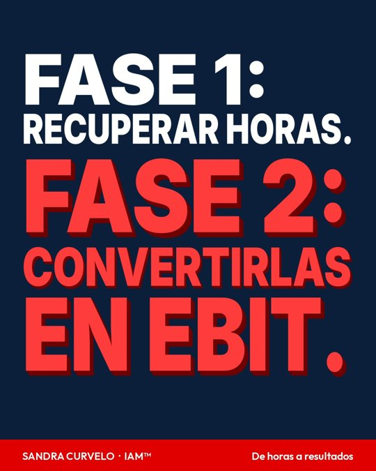
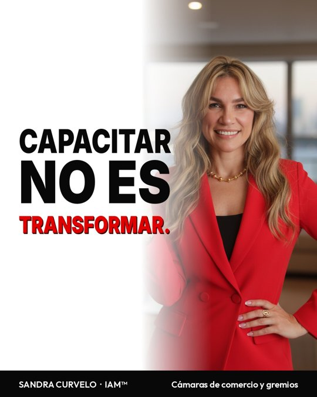
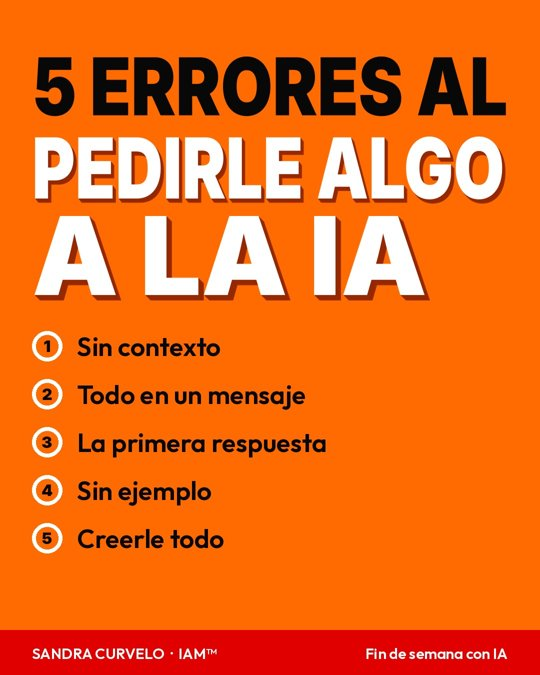

<title>Semana LinkedIn 9 al 15 nov</title>
<meta name="claude:viewport-fit-sides" content="cover">
<link rel="stylesheet" href="https://fonts.googleapis.com/css2?family=Playfair+Display:wght@800&family=Outfit:wght@400;600&display=swap">
<style>
/* Layout: una columna de revisión; cada post es una ficha con imagen a la izquierda y texto exacto a la derecha */
:root{--bg:#f7f4f4;--card:#ffffff;--fg:#17110f;--muted:#6d6260;--line:#e6dddc;--red:#c00000;--ok:#1d7a45;
--display:"Playfair Display",Georgia,serif;--body:"Outfit",system-ui,sans-serif}
@media (prefers-color-scheme:dark){:root:not([data-theme="light"]){--bg:#0e0b0b;--card:#171212;--fg:#f2ecea;--muted:#a69997;--line:#2d2423;--red:#ff4d4d;--ok:#52c487;color-scheme:dark}}
:root[data-theme="dark"]{--bg:#0e0b0b;--card:#171212;--fg:#f2ecea;--muted:#a69997;--line:#2d2423;--red:#ff4d4d;--ok:#52c487;color-scheme:dark}
body{background:var(--bg);color:var(--fg);font-family:var(--body);font-size:16px;line-height:1.55;padding-left:max(16px,env(safe-area-inset-left,0px));padding-right:max(16px,env(safe-area-inset-right,0px));padding-block:32px 64px}
main{max-width:1040px;margin:0 auto;display:flex;flex-direction:column;gap:22px}
.eb{font-weight:600;font-size:13px;letter-spacing:.1em;text-transform:uppercase;color:var(--red)}
h1{font-family:var(--display);font-size:clamp(30px,5vw,44px);line-height:1.1;margin:6px 0 8px;text-wrap:balance}
.lede{color:var(--muted);max-width:68ch;margin:0}
.post{background:var(--card);border:1px solid var(--line);border-radius:10px;padding:18px;display:flex;flex-direction:column;gap:14px}
.post.done{opacity:.75}
.post header{display:flex;flex-wrap:wrap;gap:8px 14px;align-items:center}
.when{font-family:var(--display);font-size:20px}
.code{color:var(--muted);font-size:13px;margin-left:auto}
.pill{font-weight:600;font-size:12px;letter-spacing:.06em;text-transform:uppercase;padding:3px 10px;border-radius:99px;border:1.5px solid var(--red);color:var(--red)}
.pill.ok{border-color:var(--ok);color:var(--ok)}
.grid{display:grid;grid-template-columns:minmax(0,300px) minmax(0,1fr);gap:20px;align-items:start}
figure{margin:0} figure img{width:100%;border-radius:6px;display:block;border:1px solid var(--line)}
.copy{min-width:0;display:flex;flex-direction:column;gap:12px}
.txt{white-space:pre-wrap;margin:0;max-width:65ch}
.tags{color:var(--red);margin:0;font-size:14px}
.com{border-left:3px solid var(--red);padding:10px 14px;background:var(--bg);border-radius:4px}
.com p{margin:4px 0 0}
.lbl{font-weight:600;font-size:12px;letter-spacing:.08em;text-transform:uppercase;color:var(--muted)}
@media (max-width:700px){.grid{grid-template-columns:1fr} figure img{max-width:340px}}
</style>
<main>
<header>
  <div class="eb">Sandra Curvelo · IAM™ · Calendario de LinkedIn</div>
  <h1>Semana del 9 al 15 de noviembre</h1>
  <p class="lede">12 publicaciones: 10 nuevas por aprobar y 2 ya aprobadas (expectativa y edición 1 de la newsletter). Cada ficha muestra la imagen, el texto exacto tal como saldría y su primer comentario. Nada se programa sin tu "sí".</p>
</header>
<article class="post" id="lun-09-am">
  <header><span class="when">Lunes 9 · 7:30 a. m.</span><span class="pill">Por aprobar</span><span class="code">lun-09-am</span></header>
  <div class="grid"><figure></figure><div class="copy"><p class="txt">Es temporada de presupuestos. Y en el de 2027 casi todas las empresas van a tener una línea que dice: IA.

La pregunta no es si invertir en IA. Es en qué.

Opción 1: comprar licencias.
Opción 2: instalar un sistema de trabajo por áreas, donde se mide qué cambia.

La primera es un gasto. La segunda es una inversión.

Una licencia sin método termina como la caminadora de la casa: comprada con ilusión y usada para colgar ropa.

Por eso en mis programas no empiezo por la herramienta. Empiezo por el IAE™, el Índice de IA Empresarial, que mide 3 cosas:

⭕ Adopción: qué porcentaje del equipo usa la IA en su trabajo real.

⭕ Horas recuperadas: cuánto tarda cada tarea antes y después.

⭕ Evolución: qué área sube y cuál baja, semana a semana.

Si vas a poner #IA en tu presupuesto 2027, ponle también cómo la vas a medir.

¿Tu empresa ya definió en qué va a invertir en IA el próximo año?

Si quieres ver cómo se mide la IA en una empresa real, sígueme: cada semana muestro un tablero.</p><p class="tags">#Presupuesto2027 #IAEmpresarial #IAM #IAMIntelligent #IAMInfluence #IAMCommercial #IAMSocial #IAMAmbassadors</p><div class="com"><span class="lbl">Primer comentario</span><p>Una pregunta para llevar a la reunión de presupuesto: ¿cómo vamos a saber, en 90 días, si la inversión en IA funcionó? Si nadie en la mesa la puede responder, lo que falta es el método, no la herramienta.</p></div></div></div>
</article><article class="post" id="lun-09-pm">
  <header><span class="when">Lunes 9 · 5:30 p. m.</span><span class="pill">Por aprobar</span><span class="code">lun-09-pm</span></header>
  <div class="grid"><figure></figure><div class="copy"><p class="txt">Usar la IA de forma responsable no es firmar una política y guardarla en un cajón.

Es decidir, tarea por tarea, qué hace la IA y qué hace la persona.

En los programas que lidero hay 3 reglas que no se negocian:

⭕ La IA prepara. La persona revisa, decide y firma.

⭕ Los datos personales se anonimizan antes de entrar a cualquier herramienta, como lo exige la ley de protección de datos en Colombia.

⭕ Ninguna decisión que afecte los derechos de una persona queda en manos de la IA.

Suena básico. Pero cuando un equipo descubre que la IA le ahorra horas, la tentación es soltarle todo.

Ahí es donde se necesita método, no entusiasmo.

La #IA responsable no frena la #Productividad. La protege.

¿Cuál de estas 3 reglas le falta hoy a tu empresa?

Sígueme si quieres más IA aplicada con criterio, no solo con velocidad.</p><p class="tags">#IAResponsable #Ley1581 #IAM #IAMIntelligent #IAMInfluence #IAMCommercial #IAMSocial #IAMAmbassadors</p><div class="com"><span class="lbl">Primer comentario</span><p>Una forma práctica de empezar: haz la lista de las tareas donde tu equipo ya usa IA y escribe al lado quién revisa el resultado. Si alguna no tiene responsable, ahí está tu primer riesgo.</p></div></div></div>
</article><article class="post" id="mar-10-am">
  <header><span class="when">Martes 10 · 7:30 a. m.</span><span class="pill">Por aprobar</span><span class="code">mar-10-am</span></header>
  <div class="grid"><figure></figure><div class="copy"><p class="txt">¿Quién es el responsable de la IA en tu empresa?

Si la respuesta es &quot;el área de tecnología&quot;, hay un problema.

Tecnología sabe de herramientas. Pero no sabe qué tarea de jurídica se puede llevar a la IA, ni qué dato de talento humano nunca debe salir de la empresa.

Un plan de gobernanza de #IA responde 5 preguntas:

⭕ Quién es el responsable en cada área.

⭕ Qué tareas sí se le dan a la IA y cuáles no.

⭕ Qué datos pueden entrar y cuáles nunca.

⭕ Quién revisa y firma lo que la IA produce.

⭕ Cómo se mide y cómo se audita.

En IAM™ armo ese plan con cada empresa antes de escalar la IA. Porque escalar sin gobierno es multiplicar el riesgo al mismo ritmo que la #Productividad.

¿Tu empresa ya tiene un responsable de IA por área?

Si estás armando el tuyo, sígueme: voy a compartir cómo se construye, paso a paso.</p><p class="tags">#GobernanzaDeIA #IAEmpresarial #IAM #IAMIntelligent #IAMInfluence #IAMCommercial #IAMSocial #IAMAmbassadors</p><div class="com"><span class="lbl">Primer comentario</span><p>Si quieres empezar hoy: pídele a cada jefe de área una lista de 3 tareas donde su equipo ya usa IA. Esa lista es el primer borrador de tu plan de gobernanza.</p></div></div></div>
</article><article class="post" id="mar-10-pm">
  <header><span class="when">Martes 10 · 5:30 p. m.</span><span class="pill">Por aprobar</span><span class="code">mar-10-pm</span></header>
  <div class="grid"><figure></figure><div class="copy"><p class="txt">Tus próximos clientes ya te están escribiendo. Solo que lo hacen en los comentarios.

Entre los &quot;felicitaciones&quot; y los &quot;excelente aporte&quot;, a veces aparece alguien que pregunta cómo se hace. O que cuenta que tiene el mismo problema.

Eso no es un comentario. Es una señal de compra.

Así lo trabajo con la #IA:

1. Le paso los comentarios de mi publicación.
2. Los ordena por intención: interés comercial, conversación o saludo.
3. Me explica por qué cada persona podría ser un cliente.
4. Me propone la respuesta, y yo decido si sale.

La IA no vende por mí. Me ayuda a no dejar a nadie esperando.

Eso es #SocialSelling con método.

¿Cuántos posibles clientes se quedaron sin respuesta en tus comentarios el último mes?

Sígueme si quieres ver cómo uso la IA para vender en LinkedIn sin perder el criterio.</p><p class="tags">#SocialSelling #Ventas #IAM #IAMIntelligent #IAMInfluence #IAMCommercial #IAMSocial #IAMAmbassadors</p><div class="com"><span class="lbl">Primer comentario</span><p>Prompt para probarlo hoy: &quot;Te pego los comentarios de mi publicación: [pega aquí]. Clasifícalos en interés comercial, conversación o saludo, y explícame por qué. No respondas por mí.&quot;</p></div></div></div>
</article><article class="post" id="mie-11-am">
  <header><span class="when">Miércoles 11 · 7:30 a. m.</span><span class="pill">Por aprobar</span><span class="code">mie-11-am</span></header>
  <div class="grid"><figure></figure><div class="copy"><p class="txt">Recuperar horas con IA es la fase 1.

La fase 2 es la que casi nadie planea: ¿en qué se van a usar esas horas?

Si no se decide, pasa lo de siempre: el tiempo libre se llena con más reuniones, más correos y más pendientes. Y la gerencia pregunta, con razón, dónde está el retorno.

Por eso, cuando un área recupera horas, trabajo con el líder 3 preguntas:

⭕ ¿Qué tarea de más valor se deja de hacer hoy por falta de tiempo?

⭕ ¿Cuántas de las horas recuperadas van a ir ahí?

⭕ ¿Cómo se va a ver eso en ventas, servicio o costos?

Así la conversación pasa de &quot;ahorramos tiempo&quot; a &quot;esto se ve en el #EBIT&quot;.

Las horas recuperadas son la materia prima. La #Productividad real está en lo que haces con ellas.

¿En qué invertiría tu equipo 4 horas más a la semana?

Sígueme si quieres ver cómo se conecta la IA con los resultados financieros.</p><p class="tags">#EBIT #Productividad #IAM #IAMIntelligent #IAMInfluence #IAMCommercial #IAMSocial #IAMAmbassadors</p><div class="com"><span class="lbl">Primer comentario</span><p>Un ejercicio sencillo: al cierre de cada mes, pídele a cada área que escriba en una línea en qué usó el tiempo que le devolvió la IA. En 3 meses tienes la historia que tu gerencia quiere escuchar.</p></div></div></div>
</article><article class="post done" id="mie-11-pm">
  <header><span class="when">Miércoles 11 · 5:30 p. m.</span><span class="pill ok">Ya aprobado</span><span class="code">mie-11-pm</span></header>
  <div class="grid"><div class="copy"><p class="txt">Post de expectativa de la newsletter (ya aprobado el 3 nov).</p></div></div>
</article><article class="post done" id="jue-12-am">
  <header><span class="when">Jueves 12 · 7:30 a. m.</span><span class="pill ok">Ya aprobado</span><span class="code">jue-12-am</span></header>
  <div class="grid"><div class="copy"><p class="txt">Edición 1 de la newsletter &quot;Lo que nadie te dice de la IA&quot; (borrador listo en LinkedIn, ya aprobado).</p></div></div>
</article><article class="post" id="jue-12-pm">
  <header><span class="when">Jueves 12 · 5:30 p. m.</span><span class="pill">Por aprobar</span><span class="code">jue-12-pm</span></header>
  <div class="grid"><figure></figure><div class="copy"><p class="txt">Si diriges una cámara de comercio o un gremio, tienes algo que ninguna empresa tiene sola: muchas empresas afiliadas que confían en lo que les recomiendas.

Y hoy casi todas tienen la misma pregunta: ¿por dónde empiezo con la #IA?

Un curso de herramientas responde el &quot;cómo&quot;. Pero los afiliados necesitan algo más:

⭕ Saber qué proceso llevar primero a la IA.

⭕ Medir si de verdad les devolvió tiempo.

⭕ Tener reglas claras de uso responsable.

Un programa de formación con medición convierte una charla en un resultado que la cámara puede mostrar.

Esa es la diferencia entre capacitar y transformar.

Si trabajas en una cámara de comercio o un gremio de América Latina, ¿cómo están acompañando a sus afiliados con la IA?

Sígueme: voy a compartir cómo se mide la IA en empresas de distintos tamaños y sectores.</p><p class="tags">#CamarasDeComercio #IAEmpresarial #IAM #IAMIntelligent #IAMInfluence #IAMCommercial #IAMSocial #IAMAmbassadors</p><div class="com"><span class="lbl">Primer comentario</span><p>Para las cámaras y gremios que estén armando su agenda de formación 2027: el mejor indicador no es cuántas personas asistieron, sino cuántas empresas siguen usando lo que aprendieron 90 días después.</p></div></div></div>
</article><article class="post" id="vie-13-am">
  <header><span class="when">Viernes 13 · 7:30 a. m.</span><span class="pill">Por aprobar</span><span class="code">vie-13-am</span></header>
  <div class="grid"><figure></figure><div class="copy"><p class="txt">Amplificar un proceso roto con IA es amplificar el caos.

Por eso creé el método DIAL-3R™. Antes de escalar cualquier herramienta, cada área pasa por 4 pasos:

⭕ Diagnosticar: mapear el proceso, verificar que no esté roto y medir la línea base.

⭕ Instruir: enseñarle al equipo a trabajar con la IA sobre ese proceso.

⭕ Aplicar: llevarlo a un proyecto de IA con tablero de control.

⭕ Liberar: pasarlo a IA agéntica, con botón de aprobación humana.

Y después, el ciclo que lo sostiene: Rutina, Resultado y Repetición.

Lo más importante: yo no construyo la IA por el equipo. Le enseño al equipo a construirla. Así no depende de mí cuando termino.

#IA con método es #Productividad que se queda.

¿En cuál de los 4 pasos crees que se quedan la mayoría de las empresas?

Sígueme si quieres conocer el método completo, paso a paso.</p><p class="tags">#DIAL3R #IAEmpresarial #IAM #IAMIntelligent #IAMInfluence #IAMCommercial #IAMSocial #IAMAmbassadors</p><div class="com"><span class="lbl">Primer comentario</span><p>Una señal de que el proceso está roto: 3 personas del área te explican la misma tarea de 3 formas distintas. Ahí todavía no hay que automatizar. Primero hay que acordar.</p></div></div></div>
</article><article class="post" id="vie-13-pm">
  <header><span class="when">Viernes 13 · 5:30 p. m.</span><span class="pill">Por aprobar</span><span class="code">vie-13-pm</span></header>
  <div class="grid"><figure><video src="img/vie-13-pm.mp4" controls muted playsinline loop autoplay preload="metadata" style="width:100%;border-radius:6px;display:block;border:1px solid var(--line)"></video></figure><div class="copy"><p class="txt">En una entidad pública, la IA no reemplaza al funcionario. Le quita el trabajo que no lo deja atender al ciudadano.

3 tareas donde la IA puede preparar el trabajo, y el funcionario revisa y firma:

⭕ PQRSDF: clasificar cada solicitud, proponer el borrador de respuesta y alertar las que están por vencer.

⭕ Pliegos: revisar requisitos y señalar riesgos antes de publicar.

⭕ Plan de desarrollo: seguir metas e indicadores en un tablero que se actualiza solo.

En los 3 casos la regla es la misma: la IA prepara, el funcionario decide.

Así se ve el tablero que implementamos. Los datos que ves son de ejemplo, para proteger la información de nuestros clientes.

La #IA en el #SectorPúblico no es para hacer menos. Es para atender mejor.

¿Cuál de estas 3 tareas le quitaría más carga a tu entidad?

Sígueme si trabajas en el sector público: cada semana muestro cómo se mide la IA en lo real.</p><p class="tags">#SectorPublico #GobiernoDigital #IAM #IAMIntelligent #IAMInfluence #IAMCommercial #IAMSocial #IAMAmbassadors</p><div class="com"><span class="lbl">Primer comentario</span><p>Para quienes preguntan por los datos: el sistema se diseña con datos anonimizados o públicos, y ninguna decisión sobre derechos del ciudadano queda en manos de la IA.</p></div></div></div>
</article><article class="post" id="sab-14">
  <header><span class="when">Sábado 14 · 9:00 a. m.</span><span class="pill">Por aprobar</span><span class="code">sab-14</span></header>
  <div class="grid"><figure></figure><div class="copy"><p class="txt">5 errores que todos cometemos cuando le pedimos algo a la IA, y cómo arreglarlos este fin de semana:

⭕ Pedir sin contexto. Arreglo: dile quién eres y para qué lo necesitas.

⭕ Pedir todo en un solo mensaje. Arreglo: una tarea a la vez.

⭕ Aceptar la primera respuesta. Arreglo: pídele que la mejore o que te dé 3 opciones.

⭕ No darle un ejemplo. Arreglo: muéstrale cómo te gusta que quede.

⭕ Creerle todo. Arreglo: pídele sus fuentes y verifica los datos.

La #IA responde tan bien como le preguntas.

¿Cuál de estos errores cometes más?

Sígueme si quieres más trucos prácticos para usar la IA en el trabajo y en la vida.</p><p class="tags">#Productividad #VidaYTrabajo #IAM #IAMIntelligent #IAMInfluence #IAMCommercial #IAMSocial #IAMAmbassadors</p><div class="com"><span class="lbl">Primer comentario</span><p>Un prompt para practicar hoy: &quot;Actúa como [rol]. Necesito [tarea] para [objetivo]. Antes de responder, hazme 3 preguntas para entender mejor lo que necesito.&quot;</p></div></div></div>
</article><article class="post" id="dom-15">
  <header><span class="when">Domingo 15 · 5:00 p. m.</span><span class="pill">Por aprobar</span><span class="code">dom-15</span></header>
  <div class="grid"><figure></figure><div class="copy"><p class="txt">Domingo. Antes de abrir el correo del lunes, te propongo un ejercicio de 5 minutos.

Escribe las 3 tareas que más repetiste esta semana. Al lado de cada una, responde:

⭕ ¿Cuánto tiempo me tomó?

⭕ ¿Alguien más podría prepararla y yo solo revisarla?

⭕ ¿Qué haría con ese tiempo si lo recuperara?

Ese papel es tu primera línea base. Y sin línea base, no hay forma de saber si la #IA te ayudó.

Lo que no se mide no puede ser mejorado. Ni en una empresa, ni en tu semana.

¿Cuál es la tarea que más repites y que menos te gusta?

Sígueme para empezar cada semana con #Productividad real.</p><p class="tags">#Productividad #IAEmpresarial #IAM #IAMIntelligent #IAMInfluence #IAMCommercial #IAMSocial #IAMAmbassadors</p><div class="com"><span class="lbl">Primer comentario</span><p>Si quieres llevarlo un paso más allá, pega esas 3 tareas en tu IA y pregúntale: &quot;¿Cuál de estas podrías prepararme tú, y qué necesitarías de mí para hacerlo bien?&quot;</p></div></div></div>
</article>
</main>